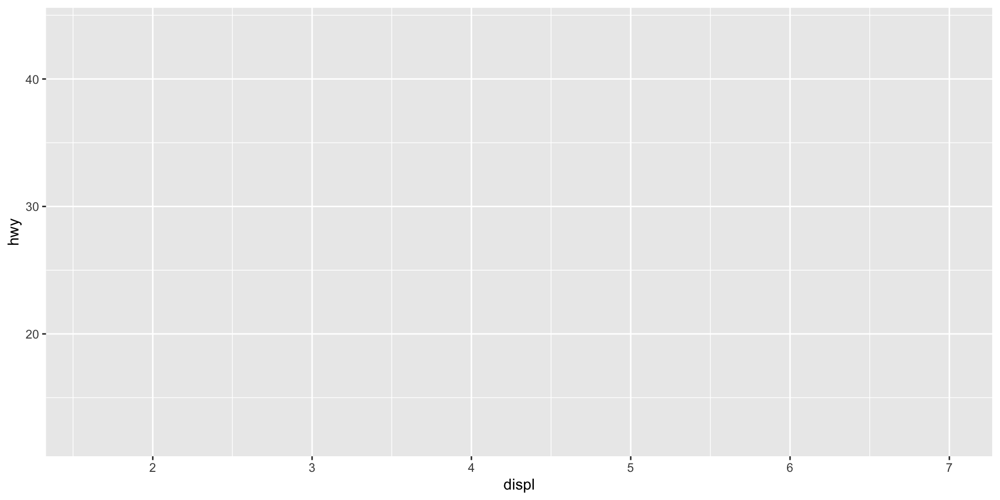
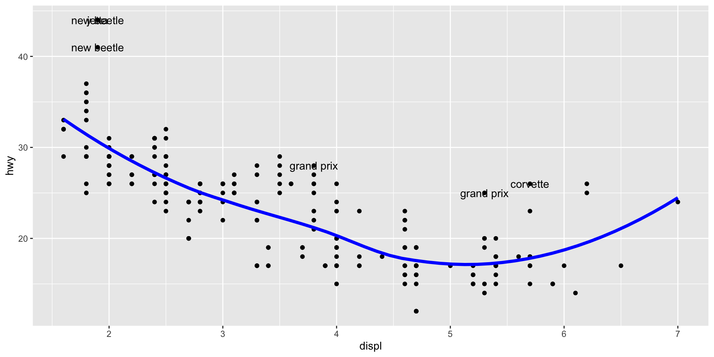
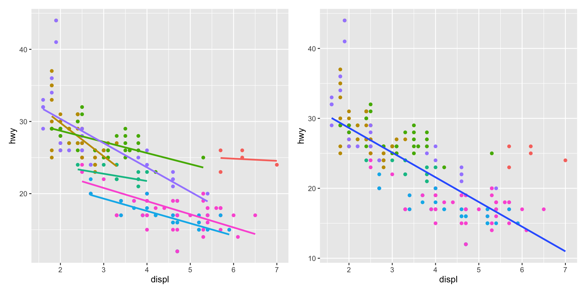
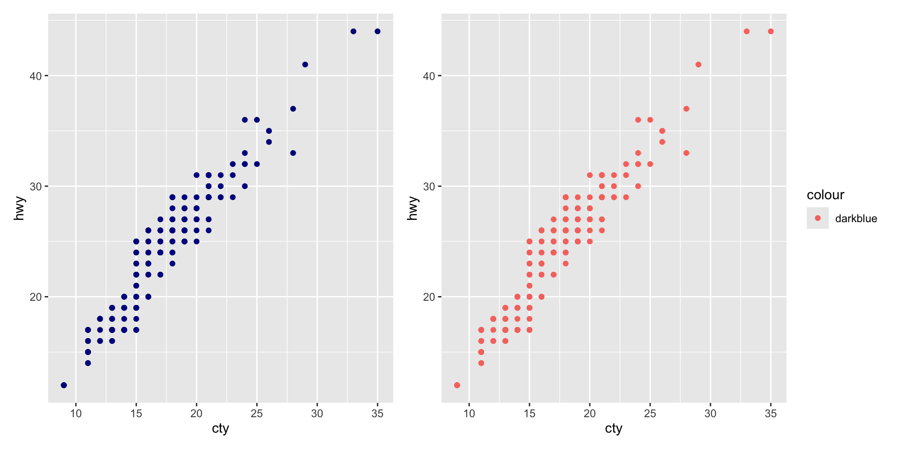
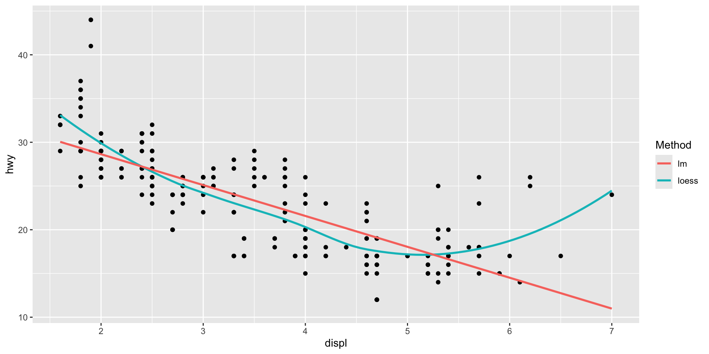
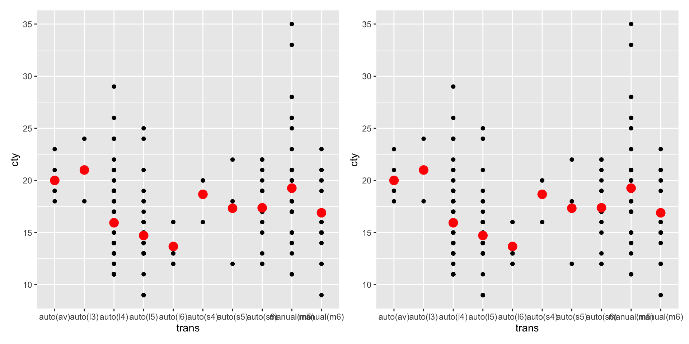
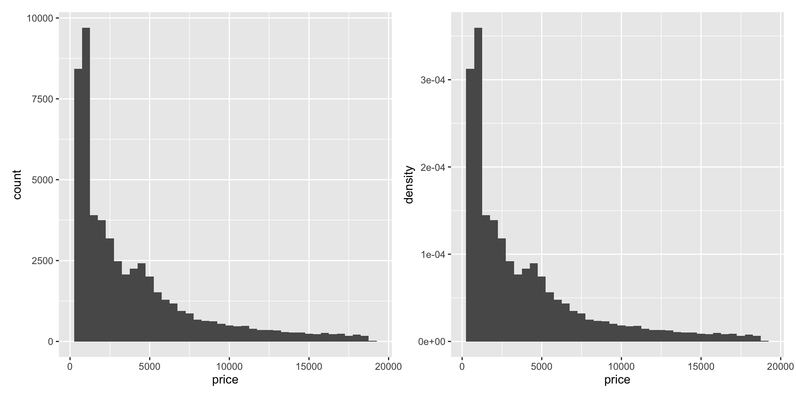
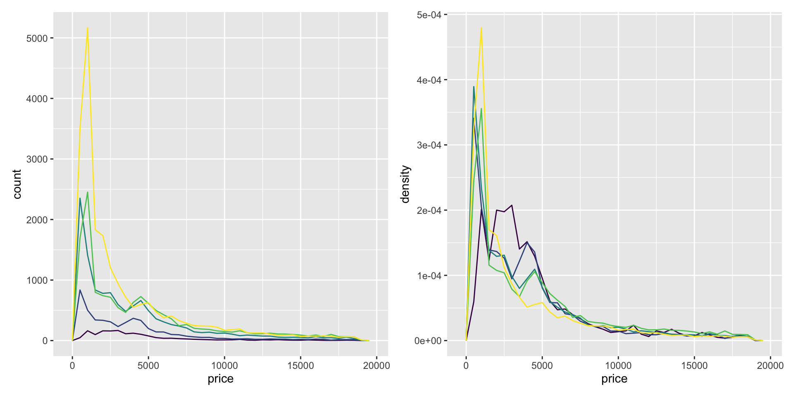
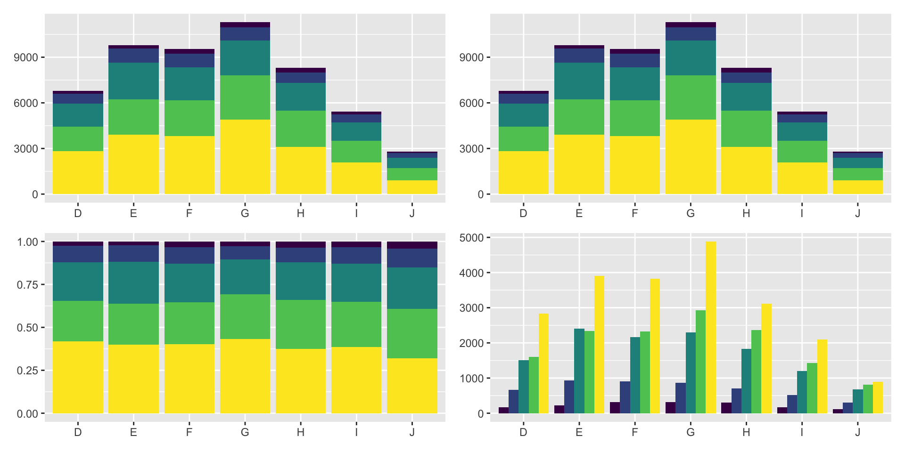
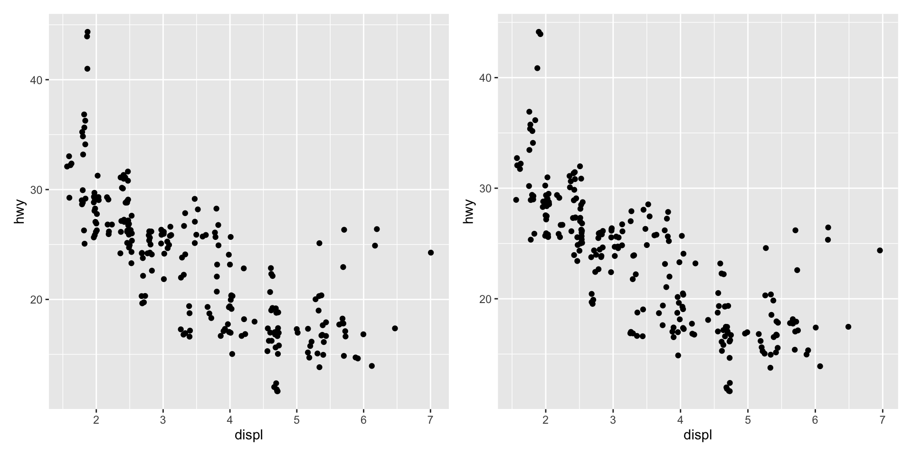

Data Analysis
Chapter 13: Build a Plot Layer by Layer
Shih Chien University
2026-06-06
Build a Plot Layer by Layer
Overview
One of the key ideas behind ggplot2 is that it lets you iterate, building up a complex plot a layer at a time. Each layer can draw on a different dataset and a different aesthetic mapping, making it possible to combine data from multiple sources in a single graphic.
You have already created layers with functions like geom_point() and geom_histogram(). This chapter dissects a layer and shows how to control all five of its components:
- Data — the data frame the layer draws from
- Aesthetic mappings — how variables connect to visual properties
- Geom — the geometric object that renders each observation
- Stat — the statistical transformation applied before drawing
- Position adjustment — how overlapping elements are nudged apart
Building a Plot
Two Distinct Steps
Whenever we create a plot with ggplot() and immediately add a geom, two distinct steps are actually happening. First, we create a plot with a default dataset and aesthetic mappings:

There is nothing to see yet — we have specified the data and mappings but no geometric object to draw them.
We then add a layer to make something appear:

geom_point() is a shortcut. Behind the scenes it calls the layer() function to build a new layer with all five components fully specified.
The explicit layer() call makes the five components visible:
You will rarely write layer() in full because it is so verbose. Instead, the geom_ functions are convenient shortcuts: geom_point(mapping, data, ...) is exactly equivalent to layer(mapping, data, geom = "point", ...). Understanding layer() nonetheless gives you a clearer mental model of what a layer really is.
Data
Data
Every layer must have data associated with it, and that data must be a tidy data frame — variables in columns, observations in rows. This is a strong restriction, but it has good reasons: your data is explicit, a single data frame is easy to save and share, and it enforces a clean separation between making data and visualising it.
Crucially, the data on each layer need not be the same. Combining several datasets in one plot is often useful. To illustrate, we generate two datasets derived from mpg: a loess fit and a set of outliers.
# A tibble: 6 × 3
model displ hwy
<chr> <dbl> <int>
1 corvette 5.7 26
2 grand prix 3.8 28
3 grand prix 5.3 25
4 jetta 1.9 44
5 new beetle 1.9 44
6 new beetle 1.9 41With these new datasets we can enhance the raw scatterplot — overlaying a smoothed line and labelling the outlying points. Note that each layer supplies its own data =:

You need the explicit data = in the layers, but not in the call to ggplot(). This is because the argument order differs: ggplot(data, mapping) versus geom_*(mapping, data). The inconsistency reduces typing for the common case of specifying the data once in ggplot().
The same plot can be written without a default dataset, supplying data to every layer instead:
This style is less clear when there is a primary dataset, but you may prefer it when no single dataset dominates.
Aesthetic Mappings
Aesthetic Mappings
The aesthetic mappings, defined with aes(), describe how variables map to visual properties:
The first two arguments default to x and y, so aes(displ, hwy, colour = class) is equivalent. A few guidelines:
- Keep calculations in
aes()simple; move complex transformations into an explicitdplyr::mutate(). - Never refer to a variable with
$(e.g.diamonds$carat) insideaes(). This breaks containment and fails when ggplot2 reorders rows (as it does when faceting).
Plot vs. Layer Aesthetics
Mappings can be supplied in ggplot(), in individual layers, or both. All of these produce the same specification:
Within a layer you can add, override, or remove mappings:
| Operation | Layer aesthetics | Result |
|---|---|---|
| Add | aes(colour = cyl) |
aes(displ, hwy, colour = cyl) |
| Override | aes(y = cty) |
aes(displ, cty) |
| Remove | aes(y = NULL) |
aes(displ) |
The distinction matters once you add multiple layers. These two plots are both valid but emphasise different things — the left colours both the points and the smooth by class; the right colours only the points:
library(patchwork)
p1 <- ggplot(mpg, aes(displ, hwy, colour = class)) +
geom_point() + geom_smooth(method = "lm", se = FALSE) +
theme(legend.position = "none")
p2 <- ggplot(mpg, aes(displ, hwy)) +
geom_point(aes(colour = class)) + geom_smooth(method = "lm", se = FALSE) +
theme(legend.position = "none")
p1 | p2
Setting vs. Mapping
Instead of mapping an aesthetic to a variable, you can set it to a single constant value as a layer parameter. The rule:
- To govern appearance by a variable → put it inside
aes(). - To override a fixed colour or size → put the value outside
aes().

The second plot above maps colour to the literal string "darkblue". This creates a one-level variable that the default discrete scale renders as a pinkish hue — almost certainly not what you wanted.
Mapping to constants is, however, genuinely useful for naming layers so they appear in a legend:

Geoms
Geoms
Geometric objects, or geoms, perform the actual rendering of a layer and determine the type of plot. A point geom makes a scatterplot; a line geom makes a line plot. ggplot2 ships with a large vocabulary of geoms, organised by the number of variables they display:
- Graphical primitives:
geom_blank(),geom_point(),geom_path(),geom_ribbon(),geom_segment(),geom_rect(),geom_polygon(),geom_text() - One variable:
geom_bar(),geom_histogram(),geom_density(),geom_dotplot(),geom_freqpoly() - Two variables:
geom_point(),geom_smooth(),geom_boxplot(),geom_bin2d(),geom_hex(),geom_count(),geom_jitter(),geom_area(),geom_line(),geom_step() - Three variables:
geom_contour(),geom_tile(),geom_raster()
Each geom understands a set of aesthetics, some of which are required. A point requires x and y and understands colour, size, and shape; a bar requires a height (ymax) and understands width, border colour, and fill.
Some geoms differ mainly in how they are parameterised. You can draw the same square three ways:
| Geom | Parameterisation |
|---|---|
geom_tile() |
location (x, y) + dimensions (width, height) |
geom_rect() |
corners (xmin, xmax, ymin, ymax) |
geom_polygon() |
a four-row data frame of corner x/y positions |
Picking the parameterisation that matches your data usually makes a plot much easier to draw.
Stats
Stats
A statistical transformation, or stat, transforms the data — typically by summarising it. Many familiar geoms are powered by a stat behind the scenes:
| Stat | Geoms |
|---|---|
stat_bin() |
geom_bar(), geom_freqpoly(), geom_histogram() |
stat_bin2d() |
geom_bin2d() |
stat_boxplot() |
geom_boxplot() |
stat_smooth() |
geom_smooth() |
stat_sum() |
geom_count() |
Other stats have no geom_ shortcut, e.g. stat_ecdf(), stat_function(), stat_summary(), stat_qq(), stat_unique().
You can either add a stat_() and override its geom, or add a geom_() and override its stat. Both produce the same red mean marker:

The second form is preferable: it makes clear that you are displaying a summary, not the raw data.
Generated Variables
A stat takes a data frame and returns a data frame, often adding new variables you can map to aesthetics. For example, stat_bin() (used by histograms) generates count, density, and x. To map a generated variable, wrap its name in after_stat():

after_stat() prevents confusion when the raw data already contains a variable of the same name, and signals to any reader that the variable was stat-generated.
Standardising to density is especially useful for comparing groups of very different sizes. Compare counts versus densities of price within cut:

The density view reveals a surprise: low-quality diamonds appear more expensive on average.
Position Adjustments
Position Adjustments
Position adjustments apply minor tweaks to the positions of elements within a layer. Three apply mainly to bars:
position_stack()— stack overlapping bars on top of each other (the default for bars)position_fill()— stack and rescale so each bar reaches 1position_dodge()— place overlapping bars side by side

There is also position_identity(), which does nothing. It is useless for bars (each obscures those behind it) but fine for geoms like lines that do not need adjusting.
Three position adjustments apply mainly to points:
position_nudge()— move points by a fixed offsetposition_jitter()— add random noise to every positionposition_jitterdodge()— dodge within groups, then add noise
Position adjustments take parameters differently from stats and geoms: you construct a position object and supply arguments to it.

The verbose form has a shortcut: geom_jitter(width = 0.05, height = 0.5). Jittering is most useful for discrete data, where exact overlaps are common.
Exercises
The first two arguments to
ggplot()aredatathenmapping; for every layer function they aremappingthendata. Why does the order differ? What does this tell you about what you set most commonly?Using
geom_line(data = grid)andgeom_text(data = outlier), reproduce the enhancedmpgscatterplot from §13.3. Then rewrite it specifying data in every layer instead of inggplot().Explain the difference in output between
geom_point(colour = "darkblue")andgeom_point(aes(colour = "darkblue")). How does addingscale_colour_identity()change the second?
The default histogram maps bar height to
count. Rewrite it to useafter_stat(density)and explain when each is appropriate.Recreate a red “mean” marker on top of a scatterplot of
ctybytrans, once withstat_summary(geom = "point", ...)and once withgeom_point(stat = "summary", ...). Which form communicates intent more clearly?Build a stacked, a filled, and a dodged bar chart of
cutwithincolorfromdiamonds. When is each position adjustment most useful?Why might you use
geom_jitter()instead ofgeom_count()for overplotted discrete data? What are the trade-offs?
Acknowledgement
Copyright notice. These teaching materials have been adapted from ggplot2: Elegant Graphics for Data Analysis (3e). All rights are reserved by the original authors and publishers.
Non-commercial use only. These materials are strictly intended for educational purposes and must not be used for commercial gain or profit.
Proper attribution. Any reproduction, distribution, or use of these materials must provide proper attribution to the original source.

ggplot2: Elegant Graphics for Data Analysis